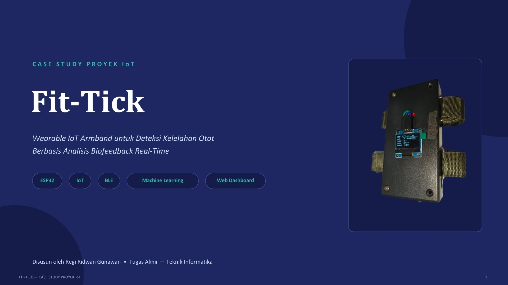
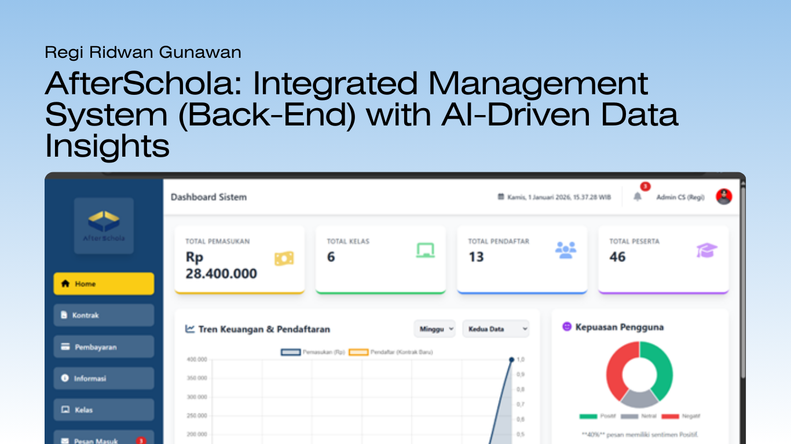
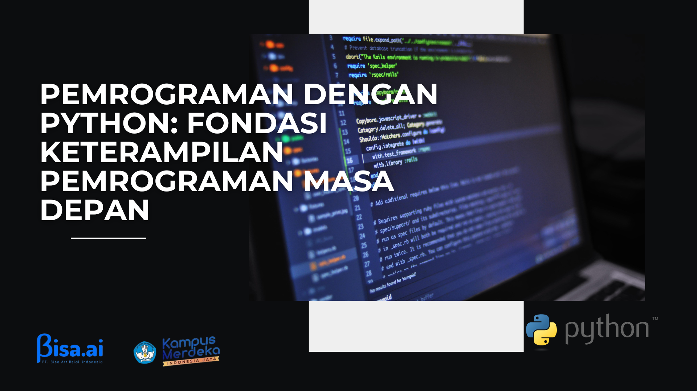
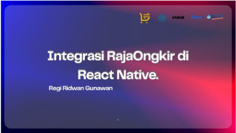
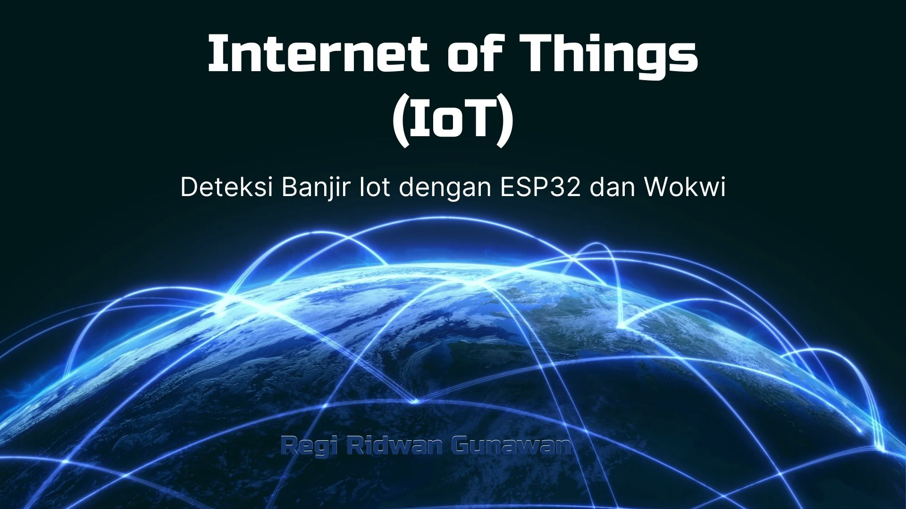
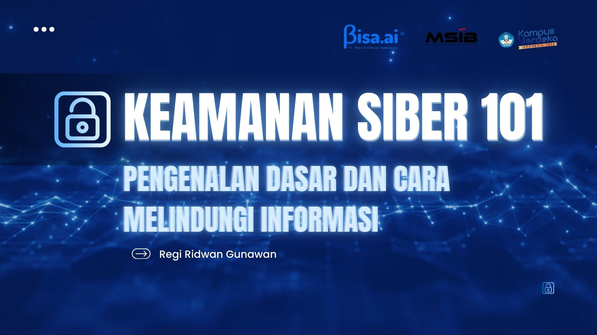
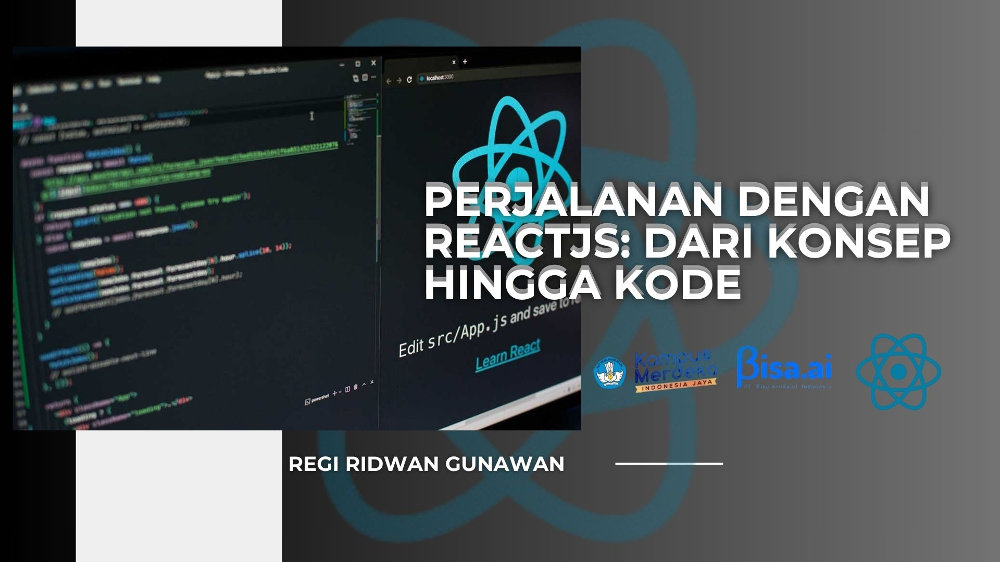
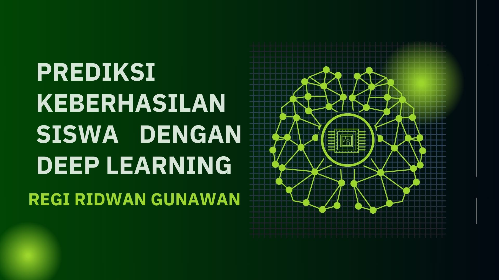
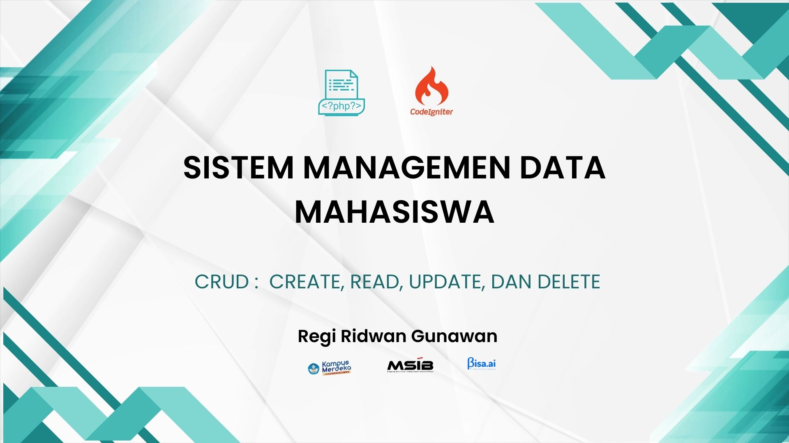
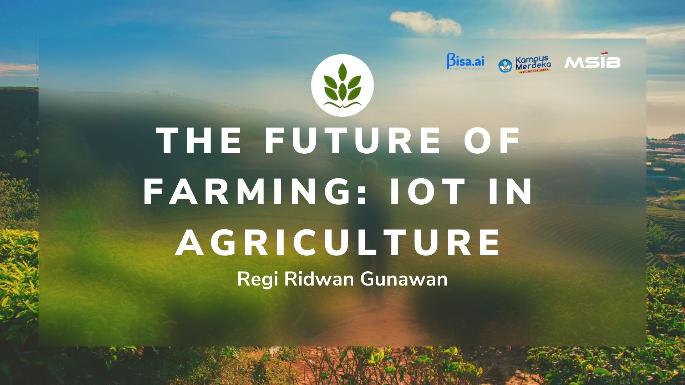

Portofolio Proyek
Kumpulan proyek yang telah saya kerjakan dalam lingkup pengembangan perangkat lunak, sistem berbasis IoT, integrasi API, serta implementasi kecerdasan buatan (AI).

IoT & LaravelFIT-TICK: Wearable IoT & Dashboard
Purwarupa wearable IoT berbasis ESP32, MAX30102, DS18B20, dan MPU6050 dengan transmisi BLE ke dashboard Laravel.

Education & CodeAfterSchola Coding Trainer Project
Proyek edukasi pembelajaran computational thinking dan implementasi logika pemrograman interaktif.

Fullstack WebFondasi Pemrograman Masa Depan
Pengembangan fondasi arsitektur sistem dan antarmuka aplikasi berbasis web modern yang skalabel.

Mobile & APIIntegrasi RajaOngkir di React Native
Implementasi REST API pelacakan dan kalkulasi ongkos kirim real-time pada aplikasi mobile React Native.

IoT & BackendIoT-Based Flood Monitoring System
Sistem pemantauan ketinggian air secara real-time berbasis mikrokontroler ESP32 dan web dashboard Flask.
Smart Door Security System
Prototipe pengamanan pintu pintar terintegrasi sensor dan kontrol nirkabel berbasis IoT.

Cyber SecurityKeamanan Siber 101
Studi dan analisis dasar kerentanan sistem, proteksi endpoint, dan manajemen keamanan data.

Frontend TechPerjalanan dengan ReactJS
Eksplorasi pembuatan komponen reusable, state management, dan arsitektur Single Page Application (SPA).

AI & Data SciencePrediksi Siswa via Deep Learning
Model klasifikasi pembelajaran mesin berbasis deep learning untuk memprediksi tingkat keberhasilan siswa.

CRUD SystemSistem Manajemen Data Mahasiswa
Aplikasi CRUD pengelolaan data akademik berbasis database relasional dengan fitur autentikasi pengguna.

Smart AgricultureIoT in Smart Agriculture
Pemanfaatan sensor parameter tanah dan lingkungan untuk otomatisasi sistem pemupukan dan irigasi cerdas.